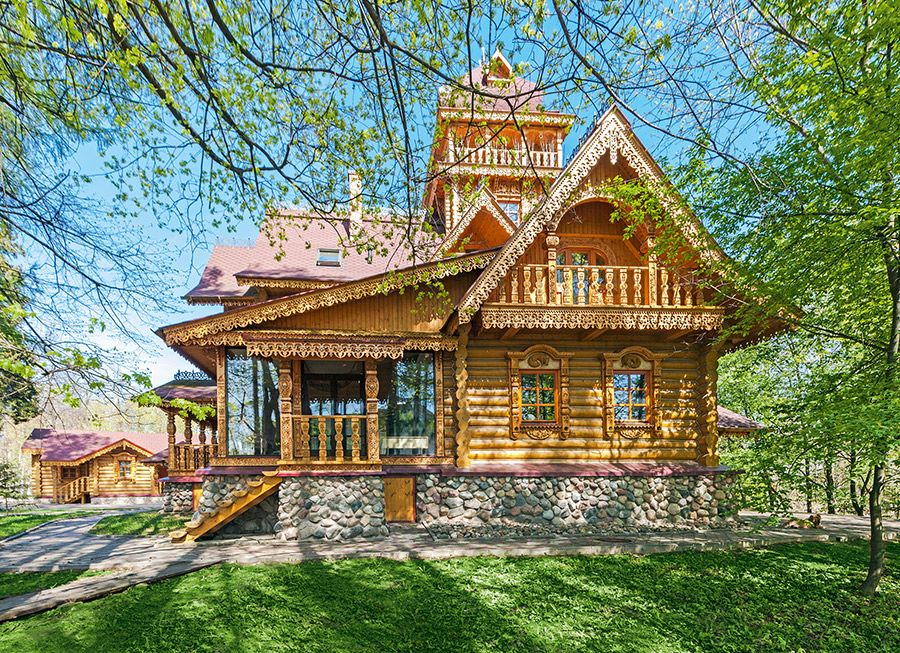

Task 1. Reading aloud
Living in a large Russian city like Moscow or Novosibirsk offers many advantages but also presents certain challenges. On the one hand, urban residents have access to the best educational institutions, modern healthcare, and a wide variety of cultural events. The public transport system, including the famous metro, allows people to move quickly between different districts. On the other hand, the fast pace of life and constant noise can be quite stressful. Many city dwellers suffer from air pollution and a lack of green spaces near their homes. Despite these drawbacks, young people continue to move to big cities in search of career opportunities and a vibrant social life. Urban planning is now focusing on creating more parks and pedestrian zones to make city life more comfortable for everyone.
Task 2. Asking questions

Study the advertisement. You are considering renting a summer house in the countryside. You’d like to get more information. In 1.5 minutes you are to ask four direct questions to find out about the following:
- 1. distance from the city
- 2. number of rooms
- 3. local facilities
- 4. monthly rent
- How far is the house from the city? (Или: What is the distance from the city?)
- How many rooms are there in the house?
- What local facilities are there near the house?
- How much is the monthly rent?
Task 3. Interview
Listen to the audio and answer the questions.
1. Where would you prefer to live: in a big city or in a small village?
I’d prefer to live in a big city. I like the fast pace of life, the variety of shops, and the fact that everything I need is always close by.
2. What are the main disadvantages of living in a metropolis?
The biggest downsides are traffic jams and air pollution. Also, it can be very noisy and crowded, which sometimes makes people feel stressed.
3. Why do many young people move from the countryside to the city?
I believe they move for better education and job opportunities. Big cities offer more career paths and a more active social life for teenagers.
4. What are the benefits of spending holidays in the countryside?
The main benefit is the fresh air and the chance to relax in nature. It’s a great way to take a break from gadgets and the noise of the city.
5. How has city life changed in Russia over the last 10 years?
I think it has become much more digital. We now have delivery services for everything and better public transport systems with electronic payments.
Task 4. Projects
Project theme: Life in the city and countryside in Russia

Task: Imagine that you are doing a project "Life in the city and countryside". Leave a voice message. In 2.5 minutes be ready to:
- explain the choice of the illustrations (brief description + differences);
- mention the advantages (1–2) of living in a big city vs. a village;
- mention the disadvantages (1–2) of both;
- express your opinion on where you would like to live in the future and why.